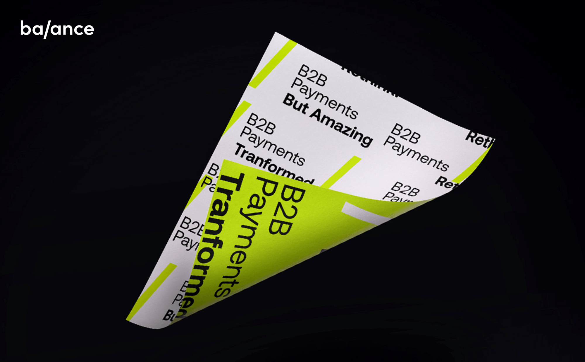
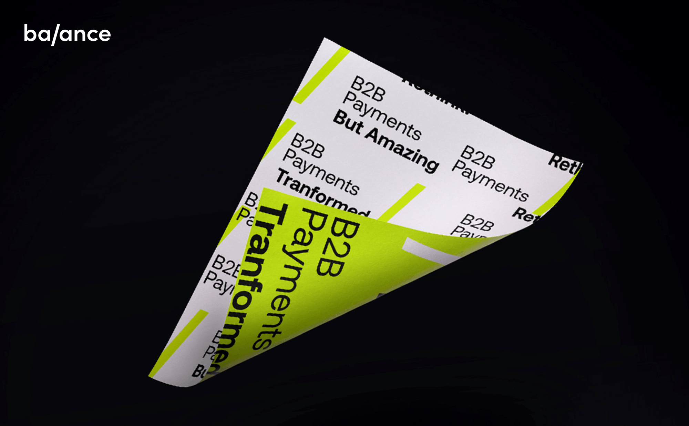

A Brand sprint for Balance, a streamline digital B2B payments that
enabling new ways to get paid which includes secure bank payments,
digital checks, powering payment terms, automatic invoice collection,
and pay after delivery. This is achieved by Balance's ML engine of
real-time authentication and financial risk assessment. In 10 days, we
created a full visual identity, from brand strategy & positioning to
brand guidelines, logo & sub-logos, icons, and a complete assets
library.
Client |
Balance
Art Direction | Studio Under
Strategic | Anastasia Vlasenko
Web Development | Michael Schwartz
Video |
Yuval Leizerman


 
